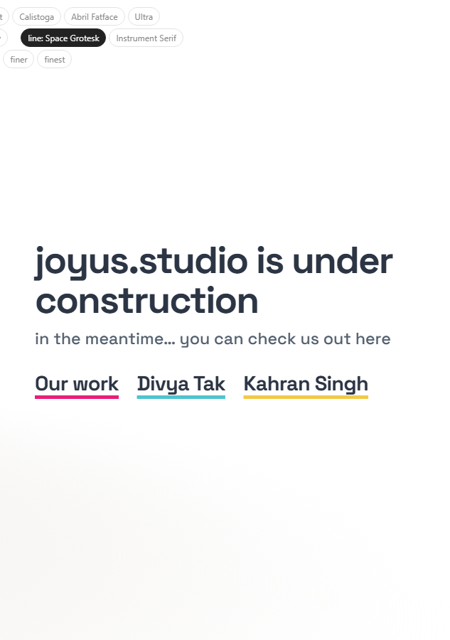
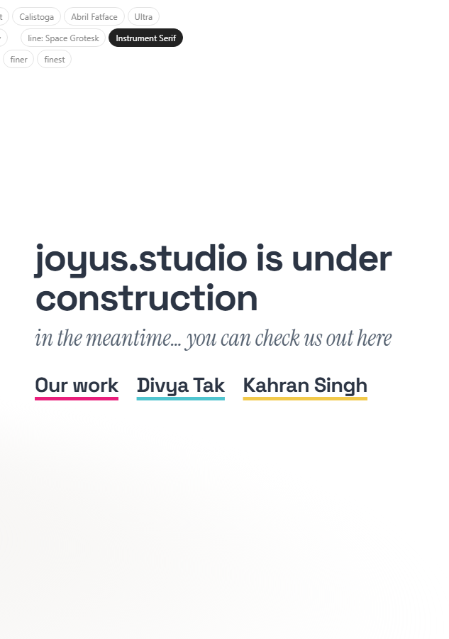
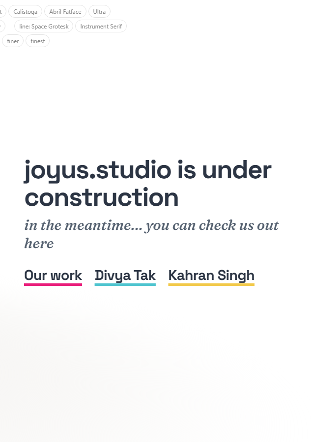
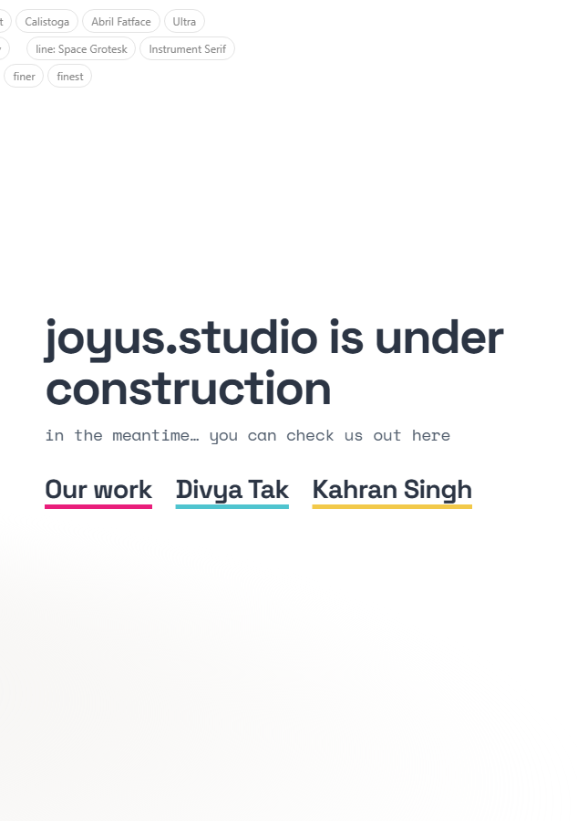

Study 33 · 13 October 2026
C, another line
Treatment C stays: big words on a thick coloured underline. Its second line in four fonts instead of Unbounded.
Open the page (line fonts at the top)



Open
- Which line.
Test: page-test.mjs, 45 checks in a browser; read by check.cjs.